An Exegesis of Advanced Normalization Tools (ANTs)
Brian B. Avants, Nicholas J. Tustison, Hans J. Johnson & the ITK and registration community
ANTsR is a platform for reproducible studies of high-dimensional data
ANTsR is built from general mathematical and software engineering principles
Questions driving ANTs development
how do we compare image pairs?
what is the pairwise similarity?
what if this pair has rgb/vector/tensor voxels?
what does one do with the statistical fields that arise from this mapping?
how do we extend from pairs to millions of pairs of images?
how to cluster these statistical fields … eanat
how to cluster them when we have supervision …. sccan
(give examples in R)
ANTsR Platform for Medical Imaging
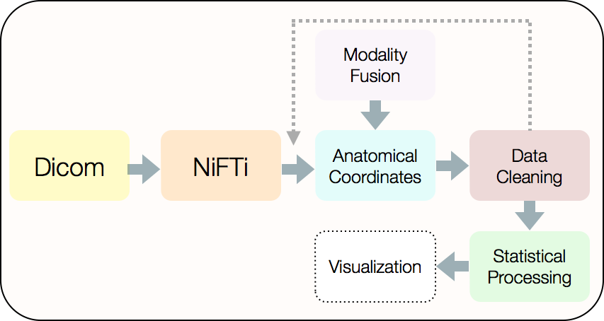
this document is another goal of ANTs as is this one
Powerful, general-purpose, well-evaluated registration and segmentation.
Differentiable maps with differentiable inverse \(+\) statistics in these spaces
Evaluated in multiple problem domains via internal studies & open competition
Borg philosophy: “best of” from I/O, to processing to statistical methods
Open source, testing, many examples, consistent style, multiple platforms, active community support …
Integration with R \(+\) novel tools for prediction, decoding, high-to-low dimensional statistics.
Collaborations with neurodebian, slicer, brainsfit, nipype, itk and more …
Powerful, general-purpose automated or semi-automated registration and segmentation.
Geometric transformations
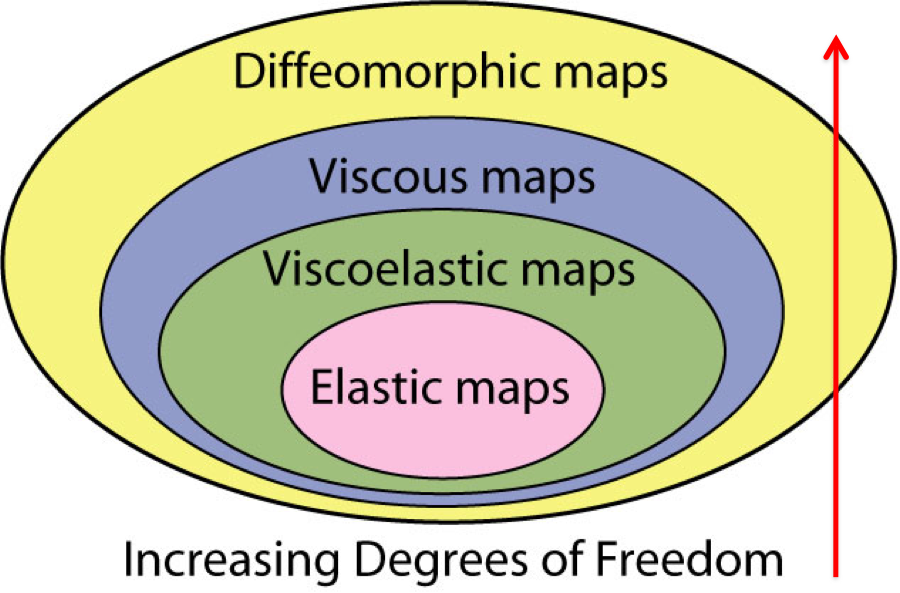
Intensity transformations
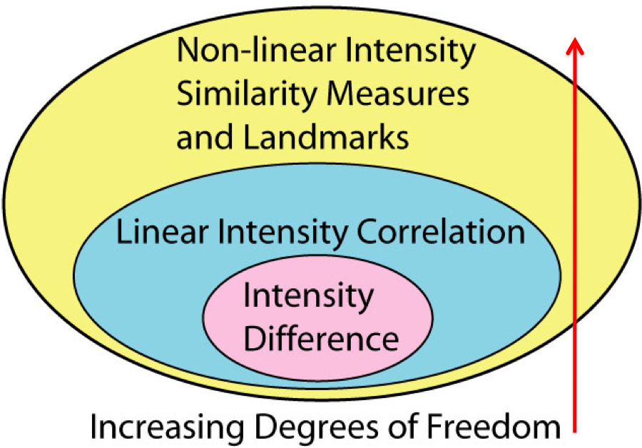
Fine-grained and flexible maps

Anatomical quantification
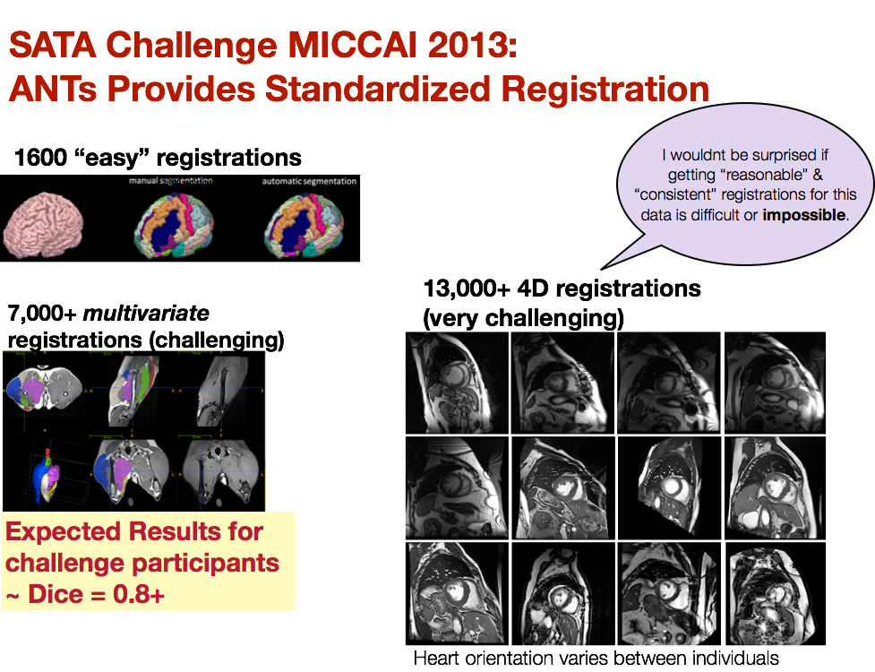
we provided the standard registration results for \(>\) 20,000 image pairs at SATA 2013
Differentiable maps with differentiable inverse \(+\) statistics in these spaces
Brain images as high-dimensional data
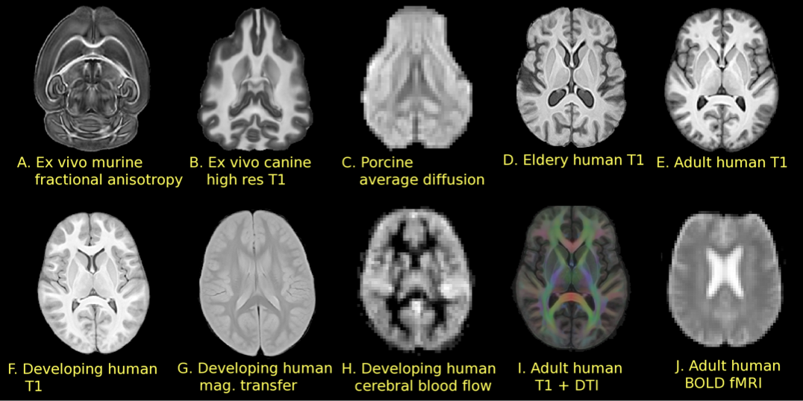
Political activism
Customizable multivariate segmentation & registration
Mammalian cortical thickness computed with ANTs

General theory tunable to specific domains: no-free lunch
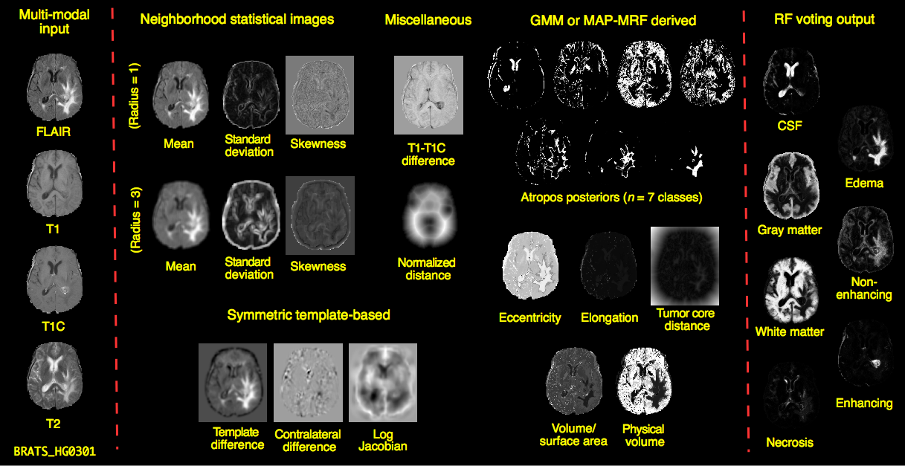
Agnostic data integration: prediction, decoding, diagnosis
ITK+ANTs+R = ANTsR
Agnostic statistics

ANTsR \(\rightarrow\) new insight via quantification
Good software should fade into the background … however …
As is common in science, the first big breakthrough in our understanding … [came from] an improvement in measurement.
> Daniel Kahnemann, Thinking, Fast and Slow (2011)
Questions & ANTsRs
Can we do a better job of aligning these brains?
Brain mapping in the early 2000s was based on Matlab scripts or the Demons algorithm
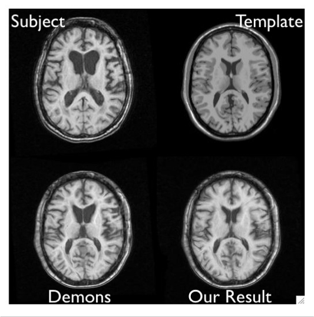
These approaches over-penalized large deformations and were inadequate for several classes of problems
Compare chimpanzee and human prefrontal cortex
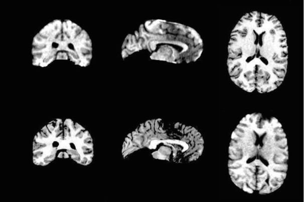
ANTs was begotten in SyN: “science is the belief in the ignorance of experts”
SyN formulation
\[ \begin{aligned} \inf_{\phi_1} \inf_{\phi_2} \Bigg[ \int_0^{0.5} & \left( \|v_1(t)\|_L^2 + \|v_2(t)\|_L^2 \right) dt \nonumber \\ &+ \int_{\Omega} \Pi_{\sim} \left( I \circ \phi_1^{-1}(\mathbf{x},0.5), J \circ \phi_2^{-1}(\mathbf{x},0.5) \right) d\Omega \Bigg] \end{aligned} \] where \[ \frac{d \phi_i(\mathbf{x},t)}{dt} = v_i( \phi_i(\mathbf{x},t), t ),\,\, \phi_i(\mathbf{x},0) = \mathbf{Id}, \,\, i \in \{1,2\} \] and \(\Pi_{\sim}\) is an arbitrary similarity metric (or metrics).
SyN for optimization symmetry
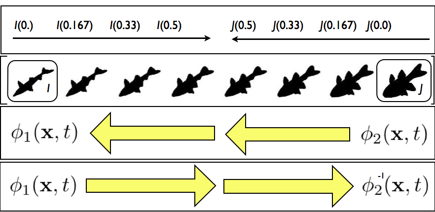 Images deform symmetrically along the shape manifold. This eliminates bias in the measurement of image differences.
Minimizing interpolations
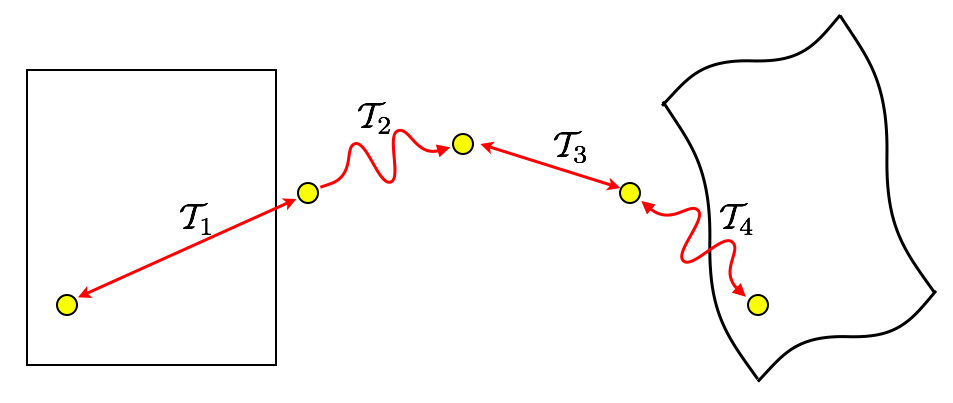
\(\mathcal{T}_{total} = \mathcal{T}_1 \circ \mathcal{T}_2 \circ \mathcal{T}_3 \circ \mathcal{T}_4\)
To avoid compounding interpolation error with the concatenation of transformations, ANTs never uses more than a single interpolation.
SyN Example
SyGN - templates and averages in deformation space
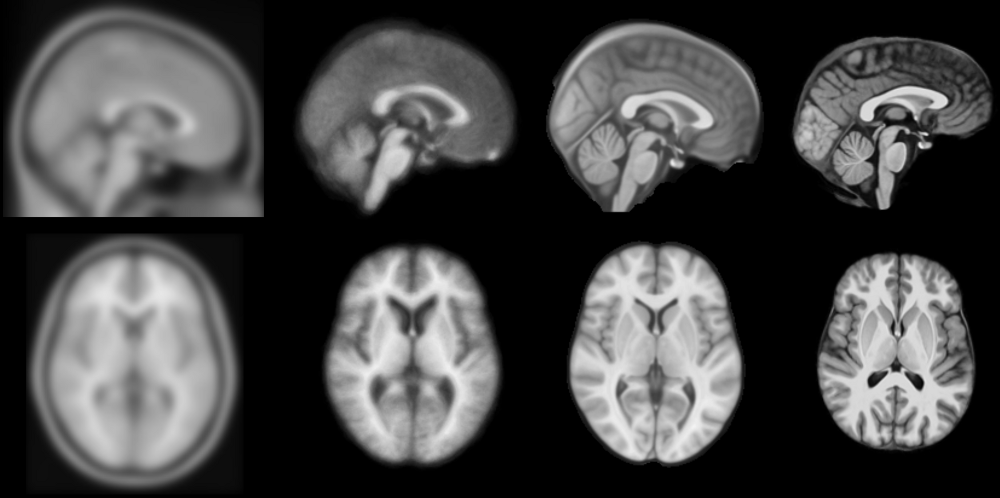 from miykael
Can we improve segmentation in “challenging” populations?
Segmentation Framework
Bias correction (with optional priors)
Prior-based tissue segmentation
Prior-based anatomical labeling
Iteration through above steps (optional)
We tried N3 and FSL-FAST for these problems … and dislike Matlab …
failed to locate well-implemented open-source resources for general purpose prior-based segmentation and inhomogeneity correction …
N4
N3 (developed at the Montreal Neurological Institute) has been the gold standard for bias correction—used in important projects such as ADNI
N3 is a set of perl scripts that works natively with the MINC file format which we tried to incorporate into an ANTs processing pipeline.
We had so much trouble converting back and forth between ITK-compatible Nifti format and MINC that BA suggested we try to implement N3 in ITK.
NT had some experience with B-splines and added some other tweaks giving birth to N4.
N4 Introduction
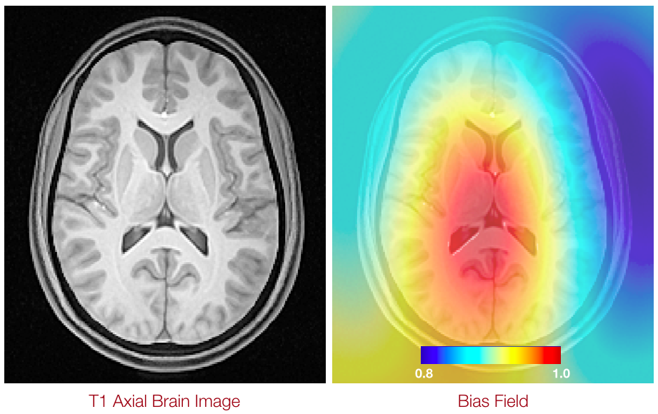
Nonparametric nonuniform intensity normalization (N3)
Sled et al., “A nonparametric method for automatic correction of intensity nonuniformity in MRI Data,” IEEE-TMI, 17(1), 1998.
Boyes et al., “Intensity non-uniformity correction using N3 on 3-T scanners with multichannel phased array coils,” NeuroImage, 39(4), 2008.
In a comparison of several correction techniques N3 performed well (Arnold et al., 2001). Also, the algorithm and software are in the public domain (http://www.bic.mni.mcgill.ca/software/N3/) and is probably the most widely used non-uniformity correction technique in neurological imaging.
Zheng et al., “Improvement of brain segmentation accuracy by optimizing non-uniformity correction using N3,” NeuroImage, 48(1), 2009.
Among existing approaches, the nonparametric non-uniformity intensity normalization method N3 (Sled et al., 1998) is one of the most frequently used… High performance and robustness have practically turned N3 into an industry standard.
Vovk et al., “A Review of Methods for Correction of Intensity Inhomogeneity in MRI,” IEEE-TMI, 26(3), 2007.
A well-known intensity inhomogeneity correction method, known as the N3 (nonparametric nonuniformity normalization), was proposed in [15]… Interestingly, no improvements have been suggested for this highly popular and successful method… The nonparametric nonuniformity normalization (N3) method [15] has obviously become the standard method against which other methods are compared.
Code
COMMAND:
N4BiasFieldCorrection
OPTIONS:
-d, --image-dimensionality 2/3/4
-i, --input-image inputImageFilename
-x, --mask-image maskImageFilename
-w, --weight-image weightImageFilename
-s, --shrink-factor 1/2/3/4/...
-c, --convergence [<numberOfIterations=50x50x50x50>,<convergenceThreshold=0.0>]
-b, --bspline-fitting [splineDistance,<splineOrder=3>]
[initialMeshResolution,<splineOrder=3>]
-t, --histogram-sharpening [<FWHM=0.15>,<wienerNoise=0.01>,<numberOfHistogramBins=200>]
-o, --output correctedImage
[correctedImage,<biasField>]
-h
--helpTalk is cheap, show me the code.
Atropos: Bayesian \(N\)-class multivariate segmentation
Similar to our experience with N3, we tried to incorporate FAST (from the FMRIB at Oxford) into an ANTs processing pipeline.
We failed to successfully incorporate priors into FAST.
Related, BA went to a segmentation-related worksop at MICCAI and aired disappointment that so much of what had been developed in the community over the last 20+ years has not been made publicly available. “What’s wrong with you people!”
3-tissue algorithm in ImageMath \(\rightarrow\) multivariate, n-class Atropos
Atropos components
Can we accurately measure cortical thickness by DiReCTly using the image space?
KellySlater \(\rightarrow\) KellyKapowski
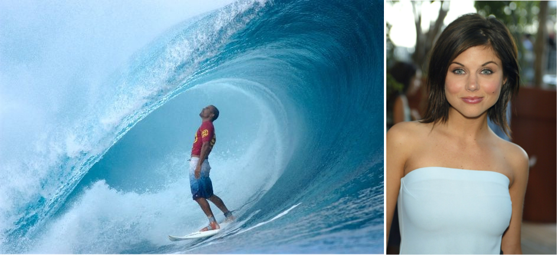
Several years of development by SR Das, BA, NT (KK fan)
Atropos \(+\) KK Example
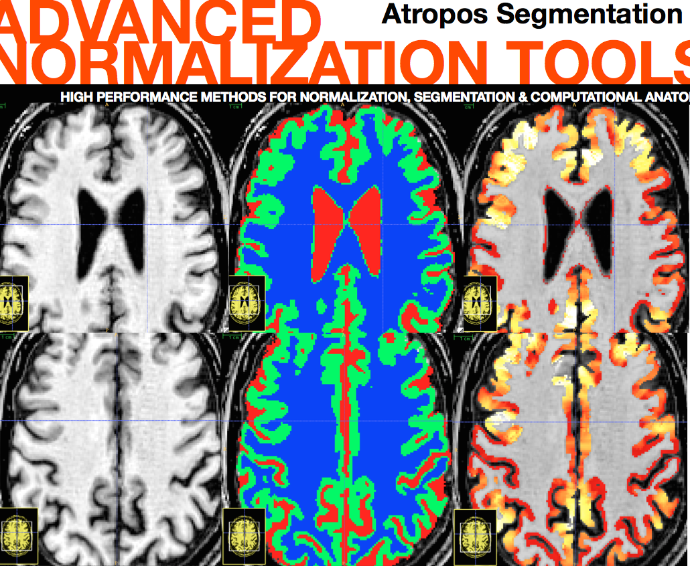
FTD
Babies
Can we quantify life span brain health in individuals and in populations?
“Big data” problem from public resources

TOT, NKI, IXI, Oasis, ADNI … several thousand images
The Glove: Comparison with Freesurfer
Question: In the absence of ground truth, how do we evaluate performance?
Answer: Use prediction of demographics from quantitative cortical thickness data as a reference for the power of our methods. One of the most well-known, most easily obtained, and most confident measures available is “age.” So we take 50% of the thickness data to train a model (e.g. linear regression) and then calculate the model’s age prediction error on the other 50%. We do this for n=1000 permutations to build a distribution. Similarly, we can do this for gender.
ANTS vs Freesurfer
ANTs vs Freesurfer 2

ANTs MALF Labeling
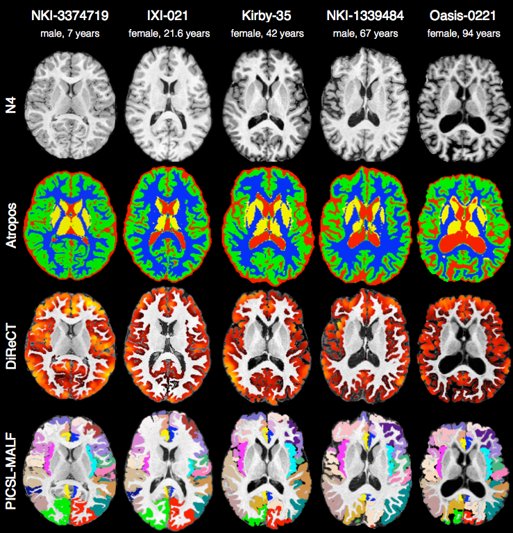
The ANTs structural brain mapping pipeline
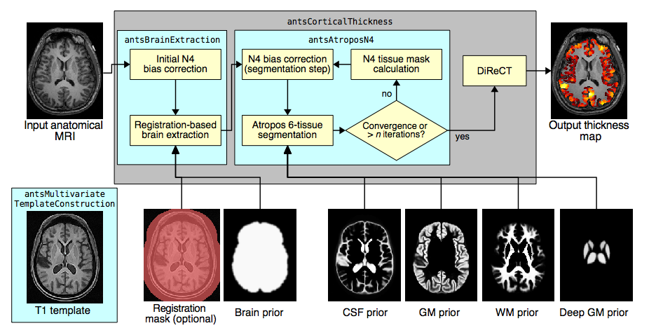
Large-scale evaluation of ANTs and FreeSurfer cortical thickness measurements, NeuroImage 2014.*
All software components are open source and part of the Advanced Normalization Tools (ANTs) repository.
Basic components of the pipeline
- template building (offline)
- brain extraction
- cortical thickness estimation
- cortical parcellation
Template building
Tailor data to your specific cohort
- Templates representing the average mean shape and intensity are built directly from the cohort to be analyzed, e.g. pediatric vs. middle-aged brains.
- Acquisition and anonymization (e.g. defacing) protocols are often different.
Template building (cont.)
Each template is processed to produce auxiliary images which are used for brain extraction and brain segmentation.
Brain extraction
Comparison with de facto standard FreeSurfer package. Note the difference in separation of the gray matter from the surrounding CSF. (0 failures out of 1205 scans)
Brain segmentation
Randomly selected healthy individuals. Atropos gets good performance across ages.
Cortical thickness estimation
In contrast to FreeSurfer which warps coupled surface meshes to segment the gray matter, ANTs diffeomorphically registers the white matter to the combined gray/white matters while simultaneously estimating thickness.
Can we implement and release, with provenance, a multiple modality MRI map of adolescent brain development from public MRI data?
Scientific Data 2014

Can we customize these methods for a challenging multivariate segmentation problem with clinical relevance?
BRATS 2013
Can we address subtle questions in brain and cognition via imaging-specific dimensionality reduction?
Eigenanatomy & SCCAN
Discussion
Problems
- Customizable for specific problems but not too specific
- Rapid development: still need familiarity with compilation for latest ANTs
- Latest theoretical advances in registration not yet wrapped for users
- Need more Documentation & testing …
Solid Core Permits Broad Applications
microscopy
satellite imagery
interactive registration (see Slicer) and segmentation (see ITK-SNAP)
Community response
Just wanted to let you know—ANTS worked for me! I seem to be getting interesting results along the line_ s of what I was predicting my study would find in specific parts of the striatum. –Patryk from Ireland
To put not to fine a point on it—ANTS rocks. –Craig from California
The ANTS package is very, very cool! –Jaime from Wisconsin
Thank you for sharing this work, and congratulations for a job well done. –Alexandra from North Carolina
Strengths
Some strengths include relatively few assumptions, a flexible implementation and open-science approach.
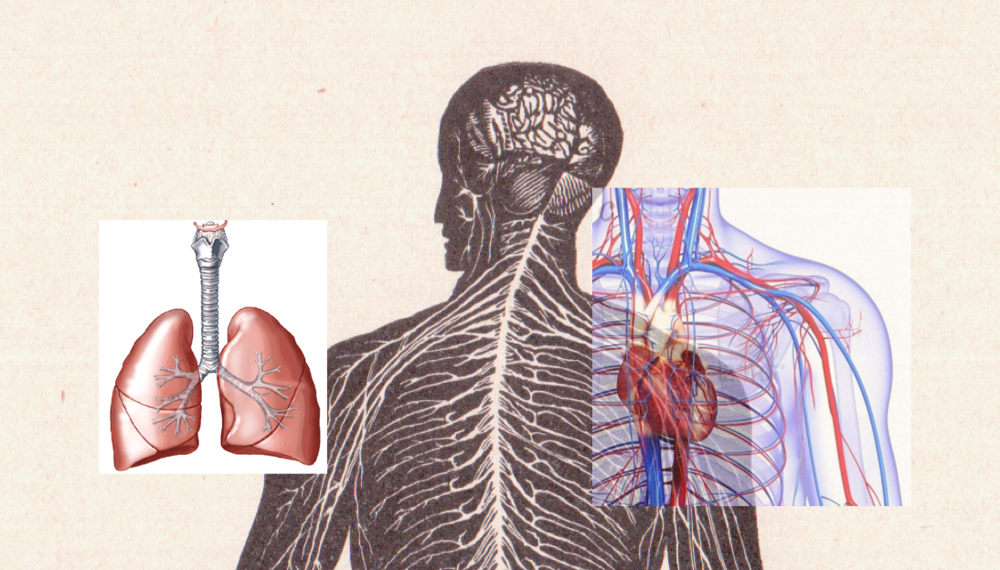
Tools you can use for imaging science
Core developers: B. Avants, N. Tustison, H. J. Johnson, J. T. Duda
Many contributors, including users …
Multi-platform, multi-threaded C++ stnava.github.io/ANTs
Developed in conjunction with http://www.itk.org/
R wrapping and extension stnava.github.io/ANTsR
rapid development, regular testing \(+\) many eyes \(\rightarrow\) bugs are shallow


competitions
- Klein 2009: Brain Registration (ANTs)
- Murphy 2010: Lung Registration (ANTs)
- SATA 2012: Multi-Atlas Segmentation (ANTs+JointLabelFusion)
- SATA 2013: Multi-Atlas Segmentation (ANTs+JointLabelFusion)
- BRATS 2013: Multivariate Brain Segmentation (ANTsR)
- Yushkevich’s Hipp Atlas: ( hippocampusubfield.com )
- TBA: BOLD decoding (ANTsR)
- Substantial work with DTI ( Camino developer in house )
- STACOM2014 ?
Data inspection w/ANTsR
spider plots ….
A couple notes on usage
- Out of the many cortical thickness algorithms that have been proposed, FreeSurfer dominates. And rightfully so, because it works well and has been the only publicly available tool (until reccently).
- In the same spirit, we have made our tools publicly available. Usage is similar to that of FreeSurfer (see below). We also make several templates available.
“Talk is cheap, show me the code.” —Linus Torvald
Software engineering
Library for multivariate image registration, segmentation & statistics
Theory + evaluation + reproducibility

Founding Developers
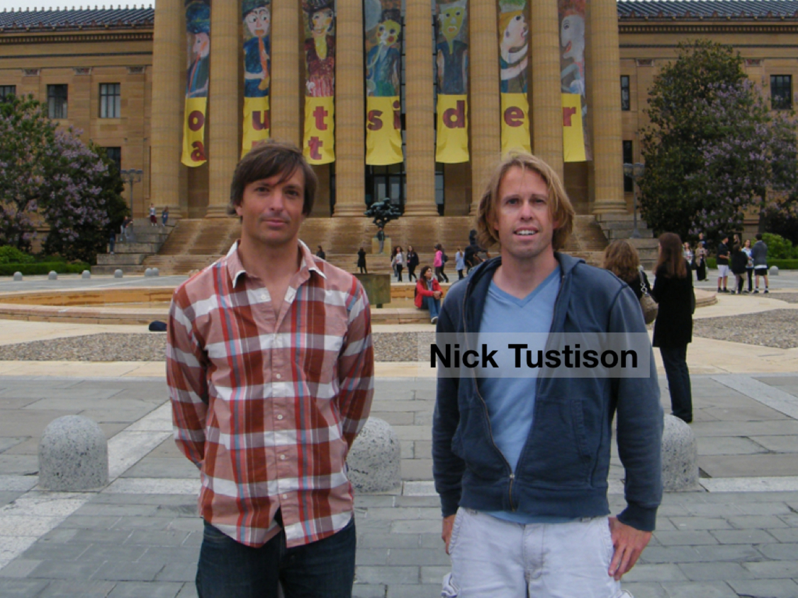
A long history of research

Rigorous transformation definition is key
ANTs and ITK are developed together: see B. B. Avants et al. (2014), Tustison and Avants (2013), Tustison et al. (2010) and more …
Key definitions
physical space
transformation definition aware of physical space
optimization space consistent with above
unit testing
Merit Badges
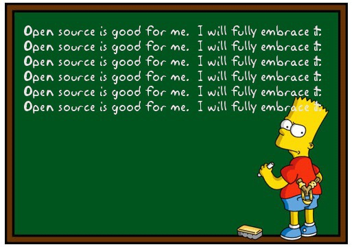
open source
built on ITK—probably the most well-vetted medical image analysis package in the world B. B. Avants and Tustison (2014)
papers
- registration : ANTs vs. everything else Klein et al. (2009)
- segmentation : Atropos vs. SPM, etc.
- bias correction : N4 vs N3
- cortical thickness : ANTs vs. FreeSurfer Tustison et al. (2014)
- compatibility with R
Analysis philosophy and published opinions
What is and is not image registration
Voodoo in voxel-based analysis
Instrumentation bias in the use and evaluation of software
References
Avants, Brian B., and Nicholas J. Tustison. 2014. “The ITK Image Registration Framework.” Front Neuroinform 7. Penn Image Computing; Science Laboratory, Department of Radiology, University of Pennsylvania Philadelphia, PA, USA.: 39. doi:10.3389/fninf.2013.00039.
Avants, Brian B., Nicholas J. Tustison, Michael Stauffer, Gang Song, Baohua Wu, and James C. Gee. 2014. “The Insight ToolKit Image Registration Framework.” Front Neuroinform 8. Penn Image Computing; Science Laboratory, Department of Radiology, University of Pennsylvania Philadelphia, PA, USA.: 44. doi:10.3389/fninf.2014.00044.
Klein, Arno, Jesper Andersson, Babak A Ardekani, John Ashburner, Brian Avants, Ming-Chang Chiang, Gary E Christensen, et al. 2009. “Evaluation of 14 Nonlinear Deformation Algorithms Applied to Human Brain MRI Registration.” Neuroimage 46 (3). New York State Psychiatric Institute, Columbia University, NY, NY 10032, USA. arno@binarybottle.com: 786–802. doi:10.1016/j.neuroimage.2008.12.037.
Tustison, Nicholas J., and Brian B. Avants. 2013. “Explicit B-Spline Regularization in Diffeomorphic Image Registration.” Front Neuroinform 7. Penn Image Computing; Science Laboratory, Department of Radiology, University of Pennsylvania Philadelphia, PA, USA.: 39. doi:10.3389/fninf.2013.00039.
Tustison, Nicholas J., Brian B. Avants, Philip A. Cook, Yuanjie Zheng, Alexander Egan, Paul A. Yushkevich, and James C. Gee. 2010. “N4ITK: Improved N3 Bias Correction.” IEEE Trans Med Imaging 29 (6). Department of Radiology, University of Pennsylvania, Philadelphia, PA 19140, USA. ntustison@wustl.edu: 1310–20. doi:10.1109/TMI.2010.2046908.
Tustison, Nicholas J., Philip A. Cook, Arno Klein, Gang Song, Sandhitsu R. Das, Jeffrey T. Duda, Benjamin M. Kandel, et al. 2014. “Large-Scale Evaluation of ANTs and FreeSurfer Cortical Thickness Measurements.” Neuroimage 99 (Oct). Penn Image Computing; Science Laboratory, University of Pennsylvania, Philadelphia, PA, USA.: 166–79. doi:10.1016/j.neuroimage.2014.05.044.